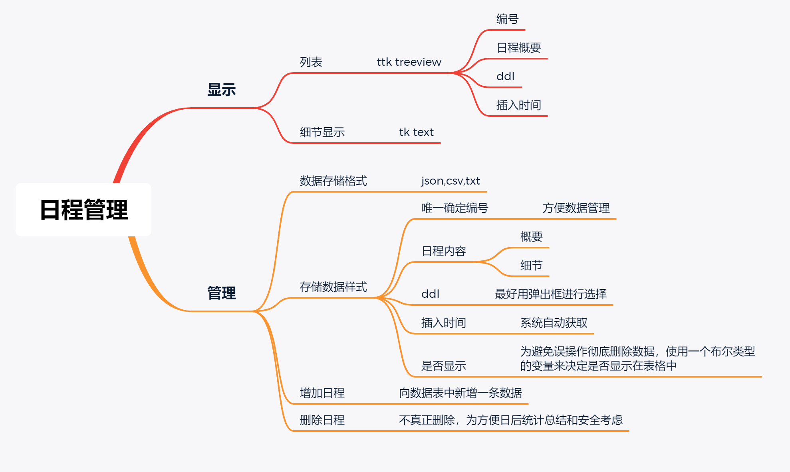
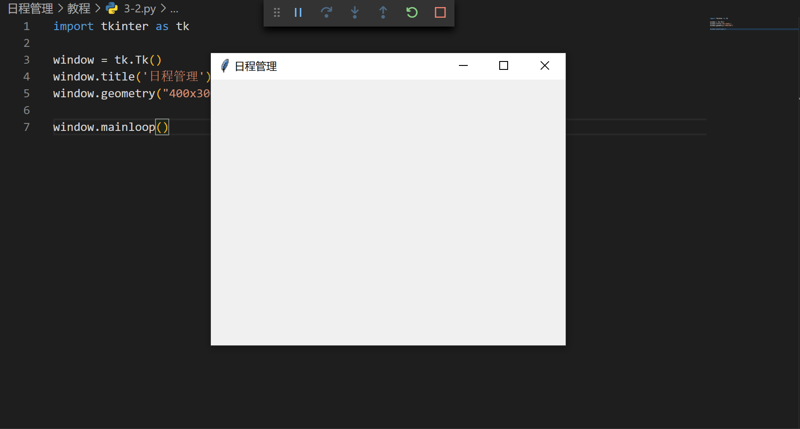
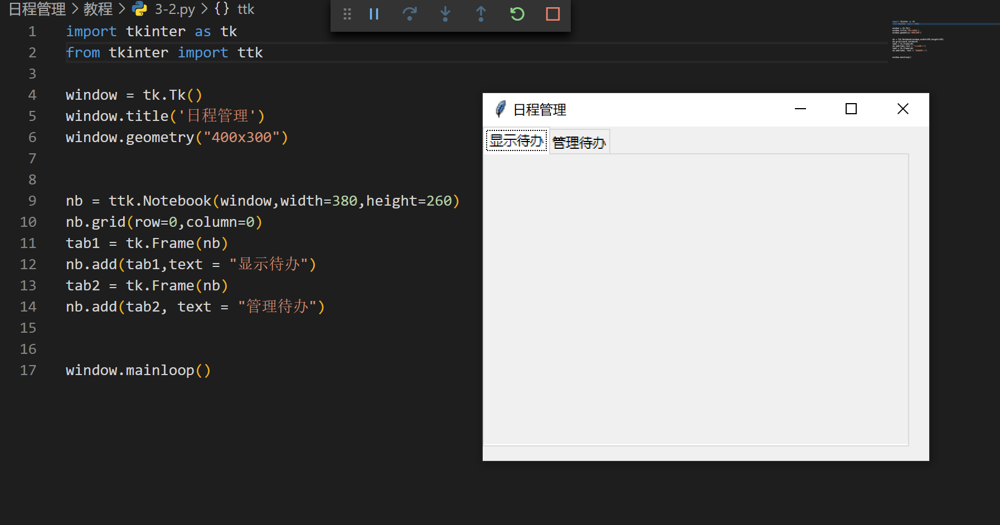
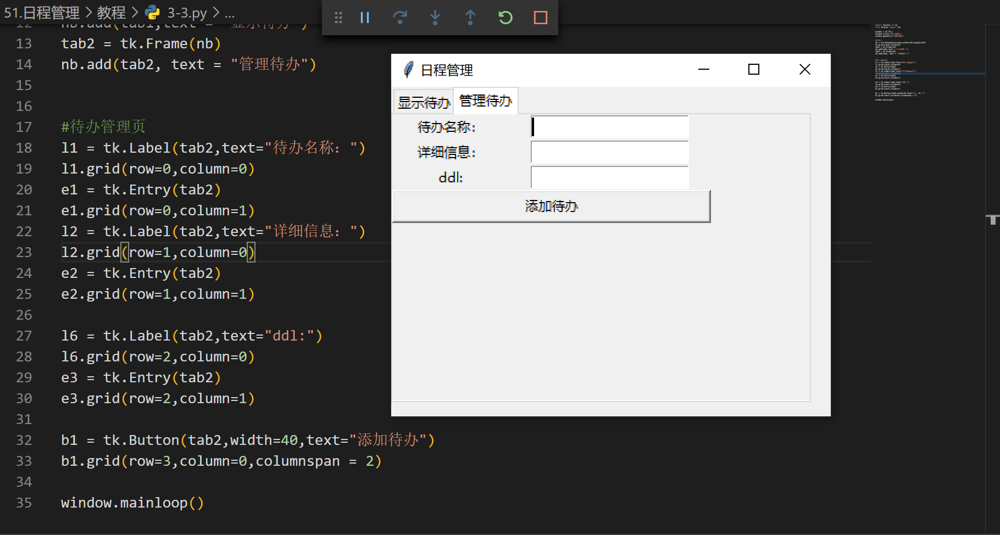

一、项目准备
说明！必看！
这篇文章是TechniColor俱乐部高级组的项目教程，是对项目的一个总结也帮助以后的同学学习
如果你不是我们俱乐部的成员但对日程管理感兴趣的话，也可以看这个教程，感谢支持
闲言少叙，我们进入正题：
日程管理是每个人都需要做的事情，不论是用好脑子还是用烂笔头抑或是程序都可以实现。程序的优点在于它很清晰同时也易于进行统计，还可以锻炼下写python的能力，这才是主要目的。
在开始敲代码之前，我们需要先看一下自己需要做什么。为了更好得整理思路，我选择使用思维导图的方式。

在确定好我们需要做什么之后，就可以着手学习敲代码了！
二、必备知识：
1.如果你只想了解程序逻辑，你可以选择跳过这部分知识，直接到第二部分
2.python的安装与卸载
请看这篇文章
3.python的基础知识
你需要掌握python的基本语法，包括但不限于数据类型，强制类型转换，运算符，变量，字符串，数组，字典，函数，文件读取，选择结构，循环结构等等
如果你都不了解，发现自己是个废物，建议马上关掉这篇文章建议马上学习一下
推荐使用的学习网站包括但不限于
菜鸟教程，廖雪峰python教程，莫烦python基础教程等等
互联网时代学习编程很大程度上需要自学，丰富的在线资源为此提供了重要的支持。尽管如此，有老师教学大多数时候都是求之不得的事情，请同学们珍惜你的老师和他们的头发。
4.tkinter的基本知识
这是python自带的一个图形化（GUI）库，你可以用它完成对用户的交互，你需要对它有一定的了解。
你可以通过这个网站学习它的基本用法。
你也可以通过这个视频来了解如何使用tkinter。
三、开始
你可以在github上找到本篇教程的全部代码，编号为3-小标题。例如“1.初始化一个tkinter窗口”的代码就在文件3-1中，如果你想白嫖代码的话，可以直接找到final文件夹，下载到本地即可。
请一定注意查看注释
1.初始化一个tkinter窗口
#导入库
import tkinter as tk
#创建一个window实例
window = tk.Tk()
window.title('日程管理')
window.geometry("400x300")
window.mainloop()
这些都是最基本的语法了。
先导入tkinter库，然后创建一个window实例。
运行效果：

2.按功能分为两个页面
#导入库
import tkinter as tk
from tkinter import ttk
#创建一个window实例
window = tk.Tk()
window.title('日程管理')
window.geometry("400x300")
#分页
nb = ttk.Notebook(window,width=380,height=260)
nb.grid(row=0,column=0)
tab1 = tk.Frame(nb)
nb.add(tab1,text = "显示待办")
tab2 = tk.Frame(nb)
nb.add(tab2, text = "管理待办")
window.mainloop()
由于前面思维导图里把主要任务分为了显示和管理，所以这里把两个页面分开。
先导入ttk库，然后创建两个Notebook实例，这样就把两个页面分开了。
这里面用到了tkinter三种包装方式pack, grid, place中的grid，也是最常用的一种。有关这三种包装方式的教程可以查看这个网站
Frame也是tkinter的组件之一，也是一个布置组件的组件（老套娃了）。
运行效果：

3.插入添加待办的组件
---
#原有内容
nb.add(tab2, text = "管理待办")
---
#新增内容
#待办管理页
#待办名称输入框
l1 = tk.Label(tab2,text="待办名称：")
l1.grid(row=0,column=0)
e1 = tk.Entry(tab2)#可以用get()方法获取输入的内容
e1.grid(row=0,column=1)
#详细信息输入框
l2 = tk.Label(tab2,text="详细信息：")
l2.grid(row=1,column=0)
e2 = tk.Entry(tab2)
e2.grid(row=1,column=1)
#ddl输入框
l6 = tk.Label(tab2,text="ddl:")
l6.grid(row=2,column=0)
e3 = tk.Entry(tab2)
e3.grid(row=2,column=1)
#按钮，可以绑定功能
b1 = tk.Button(tab2,width=40,text="添加待办")#未绑定的按钮
b1.grid(row=3,column=0,columnspan = 2)
---
#原有内容
window.mainloop()
代码越来越长，我就只显示增加的部分和前后两行原有代码了，复制时请把前后原有内容删除。
我标注原有内容的地方就是新增内容的上一行代码，新代码直接接在下方就可以。
Label、Entry和Button都是tkinter的组件。在Label上可以显示文字，起到提示功能。Entry是获取用户输入文字的组件，可以用get()方法获取输入内容。
按钮是一个可以绑定功能的组件，可以自己写一个函数，当点击按钮时执行。这里由于还没有设计函数功能，所以按钮还没有进行绑定。
运行效果：

4.设计数据表
在前面考虑数据表的格式时用了思维导图的方式来总结，这个数据表应该包括
唯一确定编号，
日程概要，
日程细节，
ddl，
插入时间，
是否显示在表格中
注：表格的绘制会在后面第6点会讲到，表格是我用来显示待办的地方。
{"0": {"name": "\u8bed\u6587", "details": "\u77ed\u8bc4", "ddl": "2021-01-05", "state": true, "time": "2021-01-05"}, "1": {"name": "\u89c2\u6469\u5361\u6362\u9009\u7968", "details": "\u897f\u697c\u5927\u5385\u6559\u5bfc\u5904", "ddl": "2021-01-06", "state": true, "time": "2021-01-06"}, "2": {"name": "\u6570\u5b66\u5c0f\u7ec4\u4efb\u52a1", "details": "\u7ed8\u5236\u5317\u4eac\u5e02\u5546\u573a\u56fe\u5c42", "ddl": "2021-01-31", "state": true, "time": "2021-01-06"}}
这是一个字典，每一个关键字都对应一个值，简称为键值对。虽然格式比较简单，但所需功能都很完整。
- 数据中“0”，“1”，“2”关键字就是唯一确定的编号。我习惯从0开始进行编号，但表格是显示给大多数人的，正常人都习惯从1开始编号。所以在显示编号时会给他们加1。
- 数据中的“name”关键字就是待办名称，可以说是日程概要。可以发现，“name”的值不是中文而是个含u的字符串，这是unicode编码，把中文字符转化为计算机通用的字符。
- 数据中“details”关键字就是日程细节。
- “ddl”就是
经常会咕的东西截止日期。 - “state”关键字是控制是否显示在表格中的。这个与删除功能相联系，后文还会再讲。
- “time”关键字是插入时间，这个是系统自动生成的，为了方面日后的统计工作。
5.数据的存储和读取
由于我使用的是json格式，json是一个python的库，需要在最开始的地方引入进来
同时在存储数据时需要系统自动存入插入时间，所以需要导入time库
#新增内容
import json #导入json库
import time
---
#原有内容
tab2 = tk.Frame(nb)
nb.add(tab2, text = "管理待办")
---
#新增内容
#载入json数据
def read_data():
global data #声明全局变量
with open("data.json","r") as f: #打开本地文件
data = json.load(f)
read_data()
---
#原有内容
e3 = tk.Entry(tab2)
e3.grid(row=2,column=1)
---
#新增内容
#存储数据
def get_data():
datas ={}
datas["name"] = e1.get()
datas["details"] = e2.get()
datas["ddl"] = date.get()
datas["state"] = True
datas["time"] = time.strftime("%Y-%m-%d",time.gmtime())
i=len(data)
data[str(i)] = datas
with open("data.json","w") as f: #打开本地文件
json.dump(data,f)
---
#更改内容
#把get_data功能绑定到b1按钮上
b1 = tk.Button(tab2,width=40,text="添加待办",command=get_data) #新增了command属性
b1.grid(row=3,column=0,columnspan = 2)
这段内容部分涉及了json的存取，你可以通过访问这个网站来了解如何存取json。
在内容中一处使用了global关键字，这是声明一个变量的全局性。变量的作用范围是有区别的，分为全局变量和局部变量。全局变量可以在程序的任何位置访问，而局部变量只能在一定的范围内使用。
button组件可以绑定功能，就是实例中的command属性。但这种方法只能实现不需要实参的函数的调用。若需要传入参数的话需要使用lambda语法。
运行效果：
如果数据正常的话不会和上一节的运行结果有任何区别，所以这里就不放图了。如果你不放心是否一切正常的话可以在window.mainloop()前加上
#新增内容
print(data)
---
#原有内容
window.mainloop()
如果你输出的结果是
{'0': {'name': '语文', 'details': '短评', 'ddl': '2021-01-05', 'state': True, 'time': '2021-01-05'}, '1': {'name': '观摩卡换选票', 'details': '西楼大厅教导处', 'ddl': '2021-01-06', 'state': True, 'time': '2021-01-06'}, '2': {'name': '数学小组任务', 'details': '绘制北京市商场图层', 'ddl': '2021-01-31', 'state': True, 'time': '2021-01-06'}, '3': {'name': '', 'details': '', 'ddl': '', 'state': True, 'time': '2021-01-06'}, '4': {'name': '', 'details': '', 'ddl': '', 'state': True, 'time': '2021-01-06'}, '5': {'name': '', 'details': '', 'ddl': '', 'state': True, 'time': '2021-01-06'}, '6': {'name': '', 'details': '', 'ddl': '', 'state': True, 'time': '2021-01-06'}, '7': {'name': '', 'details': '', 'ddl': '', 'state': True, 'time': '2021-01-06'}, '8': {'name': '', 'details': '', 'ddl': '', 'state': True, 'time': '2021-01-06'}, '9': {'name': '', 'details': '', 'ddl': '', 'state': True, 'time': '2021-01-06'}, '10': {'name': '', 'details': '', 'ddl': '', 'state': True, 'time': '2021-01-06'}, '11': {'name': '', 'details': '', 'ddl': '', 'state': True, 'time': '2021-01-06'}, '12': {'name': '', 'details': '', 'ddl': '', 'state': True, 'time': '2021-01-06'}, '13': {'name': '数学作业', 'details': 'zjq钓鱼', 'ddl': '2021-01-07', 'state': True, 'time': '2021-01-06'}}
的话，说明一切正常。
测试完后一定记得删除这句话（指print）！
6.数据显示——treeview表格的插入
这一部分虽然看起来比较复杂，但都是由基本的语法构成的，你可以查看这篇博客。
---
#原有内容
def read_data():
global data
with open("data.json","r") as f:
data = json.load(f)
read_data()
---
#新增内容
scrollBar = tk.Scrollbar(tab1) #初始化一个滚动条
#初始化一个treeview表格
columns = ("row", "data", "ddl","time")
tree = ttk.Treeview(tab1, show = "headings", columns = columns, yscrollcommand=scrollBar.set)
tree.column("row", anchor = "center",width = 40)
tree.column("data", anchor = "center",width = 150)
tree.column("ddl", anchor = "center",width = 80)
tree.column("time", anchor = "center",width = 80)
tree.heading("row", text = "编号")
tree.heading("data", text = "待办事项")
tree.heading("ddl", text = "ddl")
tree.heading("time", text = "插入时间")
scrollBar.config(command=tree.yview) #把滚动条绑定到表格
scrollBar.pack(side=tk.RIGHT,fill = tk.Y) #把滚动条显示到窗口中
#给treeview表格添加数据
i=0
for data1 in data: #这是一个遍历
#从data这个数据字典中取数据
name1 = data[data1]["name"]
ddl1 = data[data1]["ddl"]
state1 = data[data1]["state"] #或许该数据的状态，是否显示在表格中，删除数据时的功能
time1 = data[data1]["time"]
if state1 == True: #判断是否应该显示在表格中，是删除数据时的功能，先放在这里
tree.insert("",i,values = (i+1,name1,ddl1,time1))
i+=1
tree.pack()
---
#原有内容
#待办管理页
l1 = tk.Label(tab2,text="待办名称：")
l1.grid(row=0,column=0)
为了把存入数据的待办显示出来，我选择了使用ttk的treeview表格来实现，这个表格可以清晰地展示一个待办的各种信息。
不过因为设计原因，treeview只能在一页内显示十条数据，如果多于十条的话就无法显示。所以这里加入了一个滚动条来滚动数据，这样就能显示更多数据了。
对于程序的说明已经非常细致地写在了注释里，请仔细查看，或许可以帮助理解。
运行效果：

7.treeview表格的完善，显示详细信息
---
#原有内容
tree.pack()
---
#新增内容
def treeviewClick(event): #单击事件
for item in tree.selection():
item_text = tree.item(item,"values")
t1.delete('1.0', "end") #把text组件中的内容全部删掉，因为t1这个组件只起到显示功能，如果我换了下一个待办，应该只显示新待办的详细信息
for data3 in data:
data4 = data[data3]["details"]
if data3 == str(int(item_text[0])-1):
t1.insert("end",data4) #插入详细数据
tree.bind('<ButtonRelease-1>', treeviewClick) #把功能绑定给表格
#显示详细信息组件
f1 = tk.Frame(tab1)
f1.pack()
l3 = tk.Label(f1,text="点击表格查看事件详情：")
l3.grid(row=0,column=0)
t1 = tk.Text(f1,width=30,height = 2)
t1.grid(row=0,column=1)
---
#原有内容
#待办管理页
l1 = tk.Label(tab2,text="待办名称：")
l1.grid(row=0,column=0)
你现在还不需要对每一行代码都完全理解，因为很多程序逻辑见的写的多了，自然而然就能理解了。所以有遇到看不懂的就理解个大概即可。
这几行代码把隐藏在数据文件中没有显示在表格里的详细信息显示出来了。
运行效果：

8.添加删除功能
---
#原有内容
b1 = tk.Button(tab2,width=40,text="添加待办",command=get_data)
b1.grid(row=3,column=0,columnspan = 2)
---
#新增内容
#添加文字提示的组件
l5 = tk.Label(tab2)
l5.grid(row=4,column=0)
l4 = tk.Label(tab2,text="请输入编号（表格第一列）:")
l4.grid(row=5,column = 0)
e4 = tk.Entry(tab2)
e4.grid(row=5,column=1)
#修改数据文件
def delete_data():
order = str(int(e4.get())-1) #用户输入的数据索引，也就是待办的唯一编号
state3 = data[order]["state"]
if state3 == True: #如果原数据的状态是true也就是在表格中显示的话
with open("data.json","r") as load_f:
load_dict = json.load(load_f)
for i in load_dict:
if order == i:
print(load_dict[i]["state"])
load_dict[i]["state"] = False #把这个控制是否显示的值改为false，使其在表格中消失。
with open("data.json","w") as dump_f:
json.dump(load_dict,dump_f)
b2 = tk.Button(tab2,width=40,text="删除待办",command=delete_data)
b2.grid(row=6,column=0,columnspan=2)
---
#原有内容
#待办管理页
l1 = tk.Label(tab2,text="待办名称：")
l1.grid(row=0,column=0)
终于到了删除功能，这个与前面数据表的设计有很大的关系。我是通过给每个待办添加一个是否显示的属性，来实现删除效果的。也就是说，每一条待办即使你点击删除后也不会真正删除，而只是隐藏。
这么做有几个考虑，一是如果一不小心手抖删掉了一个不该删的数据，还可以很轻松的找回，只要去数据文件里把是否显示的属性更改一下即可。二是在年终如果想要统计自己这一年做了什么事情的话，可以很轻松的查看，而不是完成一条删一条，到年终一条也不剩了剩下的都是咕咕咕的ddl。
那么在实现的时候，首先要修改数据文件，然后再去在插入表格前判断一下这个数据是已经被“删除”掉了还是可以正常显示。这个功能就完成了。
判断功能在之前插入表格时就已经写上了，可以回到第六节查看。
运行效果：

可以看到，这里标号为4的待办被删除掉了。你也可以试一试删除其他编号的数据。
9.完善插入ddl功能1
你将看到一段巨长无比的代码，从datetime = calendar.datetime.datetime开始你完全不需要看懂，直接复制即可
#原有内容
#导入库
import tkinter as tk
from tkinter import ttk
import json
---
#新增内容
import calendar #新增日历库
import tkinter.font as tkFont #新增字体库
datetime = calendar.datetime.datetime
timedelta = calendar.datetime.timedelta
class Calendar:
def __init__(s, point = None, position = None):
s.master = tk.Toplevel()
s.master.withdraw()
fwday = calendar.SUNDAY
year = datetime.now().year
month = datetime.now().month
locale = None
sel_bg = '#ecffc4'
sel_fg = '#05640e'
s._date = datetime(year, month, 1)
s._selection = None # 设置为未选中日期
s.G_Frame = ttk.Frame(s.master)
s._cal = s.__get_calendar(locale, fwday)
s.__setup_styles() # 创建自定义样式
s.__place_widgets() # pack/grid 小部件
s.__config_calendar() # 调整日历列和安装标记
# 配置画布和正确的绑定，以选择日期。
s.__setup_selection(sel_bg, sel_fg)
# 存储项ID，用于稍后插入。
s._items = [s._calendar.insert('', 'end', values='') for _ in range(6)]
# 在当前空日历中插入日期
s._update()
s.G_Frame.pack(expand = 1, fill = 'both')
s.master.overrideredirect(1)
s.master.update_idletasks()
width, height = s.master.winfo_reqwidth(), s.master.winfo_reqheight()
if point and position:
if position == 'ur': x, y = point[0], point[1] - height
elif position == 'lr': x, y = point[0], point[1]
elif position == 'ul': x, y = point[0] - width, point[1] - height
elif position == 'll': x, y = point[0] - width, point[1]
else: x, y = (s.master.winfo_screenwidth() - width)/2, (s.master.winfo_screenheight() - height)/2
s.master.geometry('%dx%d+%d+%d' % (width, height, x, y)) #窗口位置居中
s.master.after(300, s._main_judge)
s.master.deiconify()
s.master.focus_set()
s.master.wait_window() #这里应该使用wait_window挂起窗口，如果使用mainloop,可能会导致主程序很多错误
def __get_calendar(s, locale, fwday):
# 实例化适当的日历类
if locale is None:
return calendar.TextCalendar(fwday)
else:
return calendar.LocaleTextCalendar(fwday, locale)
def __setitem__(s, item, value):
if item in ('year', 'month'):
raise AttributeError("attribute '%s' is not writeable" % item)
elif item == 'selectbackground':
s._canvas['background'] = value
elif item == 'selectforeground':
s._canvas.itemconfigure(s._canvas.text, item=value)
else:
s.G_Frame.__setitem__(s, item, value)
def __getitem__(s, item):
if item in ('year', 'month'):
return getattr(s._date, item)
elif item == 'selectbackground':
return s._canvas['background']
elif item == 'selectforeground':
return s._canvas.itemcget(s._canvas.text, 'fill')
else:
r = ttk.tclobjs_to_py({item: ttk.Frame.__getitem__(s, item)})
return r[item]
def __setup_styles(s):
# 自定义TTK风格
style = ttk.Style(s.master)
arrow_layout = lambda dir: (
[('Button.focus', {'children': [('Button.%sarrow' % dir, None)]})]
)
style.layout('L.TButton', arrow_layout('left'))
style.layout('R.TButton', arrow_layout('right'))
def __place_widgets(s):
# 标头框架及其小部件
Input_judgment_num = s.master.register(s.Input_judgment) # 需要将函数包装一下，必要的
hframe = ttk.Frame(s.G_Frame)
gframe = ttk.Frame(s.G_Frame)
bframe = ttk.Frame(s.G_Frame)
hframe.pack(in_=s.G_Frame, side='top', pady=5, anchor='center')
gframe.pack(in_=s.G_Frame, fill=tk.X, pady=5)
bframe.pack(in_=s.G_Frame, side='bottom', pady=5)
lbtn = ttk.Button(hframe, style='L.TButton', command=s._prev_month)
lbtn.grid(in_=hframe, column=0, row=0, padx=12)
rbtn = ttk.Button(hframe, style='R.TButton', command=s._next_month)
rbtn.grid(in_=hframe, column=5, row=0, padx=12)
s.CB_year = ttk.Combobox(hframe, width = 5, values = [str(year) for year in range(datetime.now().year, datetime.now().year-11,-1)], validate = 'key', validatecommand = (Input_judgment_num, '%P'))
s.CB_year.current(0)
s.CB_year.grid(in_=hframe, column=1, row=0)
s.CB_year.bind('<KeyPress>', lambda event:s._update(event, True))
s.CB_year.bind("<<ComboboxSelected>>", s._update)
tk.Label(hframe, text = '年', justify = 'left').grid(in_=hframe, column=2, row=0, padx=(0,5))
s.CB_month = ttk.Combobox(hframe, width = 3, values = ['%02d' % month for month in range(1,13)], state = 'readonly')
s.CB_month.current(datetime.now().month - 1)
s.CB_month.grid(in_=hframe, column=3, row=0)
s.CB_month.bind("<<ComboboxSelected>>", s._update)
tk.Label(hframe, text = '月', justify = 'left').grid(in_=hframe, column=4, row=0)
# 日历部件
s._calendar = ttk.Treeview(gframe, show='', selectmode='none', height=7)
s._calendar.pack(expand=1, fill='both', side='bottom', padx=5)
ttk.Button(bframe, text = "确 定", width = 6, command = lambda: s._exit(True)).grid(row = 0, column = 0, sticky = 'ns', padx = 20)
ttk.Button(bframe, text = "取 消", width = 6, command = s._exit).grid(row = 0, column = 1, sticky = 'ne', padx = 20)
tk.Frame(s.G_Frame, bg = '#565656').place(x = 0, y = 0, relx = 0, rely = 0, relwidth = 1, relheigh = 2/200)
tk.Frame(s.G_Frame, bg = '#565656').place(x = 0, y = 0, relx = 0, rely = 198/200, relwidth = 1, relheigh = 2/200)
tk.Frame(s.G_Frame, bg = '#565656').place(x = 0, y = 0, relx = 0, rely = 0, relwidth = 2/200, relheigh = 1)
tk.Frame(s.G_Frame, bg = '#565656').place(x = 0, y = 0, relx = 198/200, rely = 0, relwidth = 2/200, relheigh = 1)
def __config_calendar(s):
# cols = s._cal.formatweekheader(3).split()
cols = ['日','一','二','三','四','五','六']
s._calendar['columns'] = cols
s._calendar.tag_configure('header', background='grey90')
s._calendar.insert('', 'end', values=cols, tag='header')
# 调整其列宽
font = tkFont.Font()
maxwidth = max(font.measure(col) for col in cols)
for col in cols:
s._calendar.column(col, width=maxwidth, minwidth=maxwidth,
anchor='center')
def __setup_selection(s, sel_bg, sel_fg):
def __canvas_forget(evt):
canvas.place_forget()
s._selection = None
s._font = tkFont.Font()
s._canvas = canvas = tk.Canvas(s._calendar, background=sel_bg, borderwidth=0, highlightthickness=0)
canvas.text = canvas.create_text(0, 0, fill=sel_fg, anchor='w')
canvas.bind('<Button-1>', __canvas_forget)
s._calendar.bind('<Configure>', __canvas_forget)
s._calendar.bind('<Button-1>', s._pressed)
def _build_calendar(s):
year, month = s._date.year, s._date.month
# update header text (Month, YEAR)
header = s._cal.formatmonthname(year, month, 0)
# 更新日历显示的日期
cal = s._cal.monthdayscalendar(year, month)
for indx, item in enumerate(s._items):
week = cal[indx] if indx < len(cal) else []
fmt_week = [('%02d' % day) if day else '' for day in week]
s._calendar.item(item, values=fmt_week)
def _show_select(s, text, bbox):
"""为新的选择配置画布。"""
x, y, width, height = bbox
textw = s._font.measure(text)
canvas = s._canvas
canvas.configure(width = width, height = height)
canvas.coords(canvas.text, (width - textw)/2, height / 2 - 1)
canvas.itemconfigure(canvas.text, text=text)
canvas.place(in_=s._calendar, x=x, y=y)
def _pressed(s, evt = None, item = None, column = None, widget = None):
"""在日历的某个地方点击。"""
if not item:
x, y, widget = evt.x, evt.y, evt.widget
item = widget.identify_row(y)
column = widget.identify_column(x)
if not column or not item in s._items:
# 在工作日行中单击或仅在列外单击。
return
item_values = widget.item(item)['values']
if not len(item_values): # 这个月的行是空的。
return
text = item_values[int(column[1]) - 1]
if not text: # 日期为空
return
bbox = widget.bbox(item, column)
if not bbox: # 日历尚不可见
s.master.after(20, lambda : s._pressed(item = item, column = column, widget = widget))
return
# 更新，然后显示选择
text = '%02d' % text
s._selection = (text, item, column)
s._show_select(text, bbox)
def _prev_month(s):
"""更新日历以显示前一个月。"""
s._canvas.place_forget()
s._selection = None
s._date = s._date - timedelta(days=1)
s._date = datetime(s._date.year, s._date.month, 1)
s.CB_year.set(s._date.year)
s.CB_month.set(s._date.month)
s._update()
def _next_month(s):
"""更新日历以显示下一个月。"""
s._canvas.place_forget()
s._selection = None
year, month = s._date.year, s._date.month
s._date = s._date + timedelta(
days=calendar.monthrange(year, month)[1] + 1)
s._date = datetime(s._date.year, s._date.month, 1)
s.CB_year.set(s._date.year)
s.CB_month.set(s._date.month)
s._update()
def _update(s, event = None, key = None):
"""刷新界面"""
if key and event.keysym != 'Return': return
year = int(s.CB_year.get())
month = int(s.CB_month.get())
if year == 0 or year > 9999: return
s._canvas.place_forget()
s._date = datetime(year, month, 1)
s._build_calendar() # 重建日历
if year == datetime.now().year and month == datetime.now().month:
day = datetime.now().day
for _item, day_list in enumerate(s._cal.monthdayscalendar(year, month)):
if day in day_list:
item = 'I00' + str(_item + 2)
column = '#' + str(day_list.index(day)+1)
s.master.after(100, lambda :s._pressed(item = item, column = column, widget = s._calendar))
def _exit(s, confirm = False):
"""退出窗口"""
if not confirm: s._selection = None
s.master.destroy()
def _main_judge(s):
"""判断窗口是否在最顶层"""
try:
#s.master 为 TK 窗口
#if not s.master.focus_displayof(): s._exit()
#else: s.master.after(10, s._main_judge)
#s.master 为 toplevel 窗口
if s.master.focus_displayof() == None or 'toplevel' not in str(s.master.focus_displayof()): s._exit()
else: s.master.after(10, s._main_judge)
except:
s.master.after(10, s._main_judge)
#s.master.tk_focusFollowsMouse() # 焦点跟随鼠标
def selection(s):
"""返回表示当前选定日期的日期时间。"""
if not s._selection: return None
year, month = s._date.year, s._date.month
return str(datetime(year, month, int(s._selection[0])))[:10]
def Input_judgment(s, content):
"""输入判断"""
# 如果不加上==""的话，就会发现删不完。总会剩下一个数字
if content.isdigit() or content == "":
return True
else:
return False
---
#原有内容
window = tk.Tk()
window.title('日程管理')
window.geometry("400x300")
如你所见，这里直接新增了大概250行代码，但你不需要知道他们在干什么。我也是直接复制的，来源是这个大神的博客。我能知道他在大概做什么，也没有花时间完全看懂。你可以把它们理解为这些代码相当于写了一个库，你可以从里面来调用一些内容。
写程序有时候其实就是在ctrl cv，见得多了就懂怎么写了。别人的东西可以为我所用，我就直接拿过来用，这在学习编程时并不是什么可耻的想法，当然前提是你所抄的那个人是把代码公开出来的，而不是你去剽窃。很多程序员都会把自己写的东西公开给大家，供后人学习，这也是互联网开源精神。也是我在这里写这么长的文章给大家看的根本原因，虽然也为了分吧。
运行效果：
这里不会输出任何东西，你只要把它们复制进去即可。
10.完善插入ddl功能2
由于前面第九节的代码实在是太长了，我就把剩下的代码分到了这个里面。
---
#原有内容
#详细信息输入框
e2 = tk.Entry(tab2)
e2.grid(row=1,column=1)
---
#修改内容，这里原先有一个手动输入日期的ddl输入框
#ddl输入框
x, y = (window.winfo_screenwidth())/2, (window.winfo_screenheight())/2 #无需掌握
date_str = tk.StringVar() #定义一个字符串变量
date = ttk.Entry(tab2, textvariable = date_str) #放入一个显示框
date.grid(row=2,column=1)
#这些代码，你也不需要明白每一句的意思，这是一种简写方式
date_str_gain = lambda: [
date_str.set(date)
for date in [Calendar((x, y), 'ur').selection()]
if date]
#简写方式
tk.Button(tab2, text = '选择ddl', command = date_str_gain).grid(row=2,column=0)
---
#原有内容
#待办管理页
l1 = tk.Label(tab2,text="待办名称：")
l1.grid(row=0,column=0)
这里，替换了原先的ddl选择方式，而用了弹出框的方式来选择日期，更加易于使用。
到这里，这篇教程的代码部分就结束了！
运行效果：

四、总结
这篇文章是我第一次写教程，如果你能看懂的话，那您可能真的是理解能力超群。
如果喜欢的话，那就自己试试。如果嫌丑的话，你自己写呗也没什么办法，毕竟tkinter并不适于写GUI界面，如果想要它变得好看的话，可以学习其他的库，或者网页前端。不过tkinter永远是最简单的那个。如果遇到问题的话，先检查一下有没有少复制几行代码，如果确认没有的话就请评论告诉我，我也不保证一定有时间来改。
就写这么多了，我是Mr.Zhang。